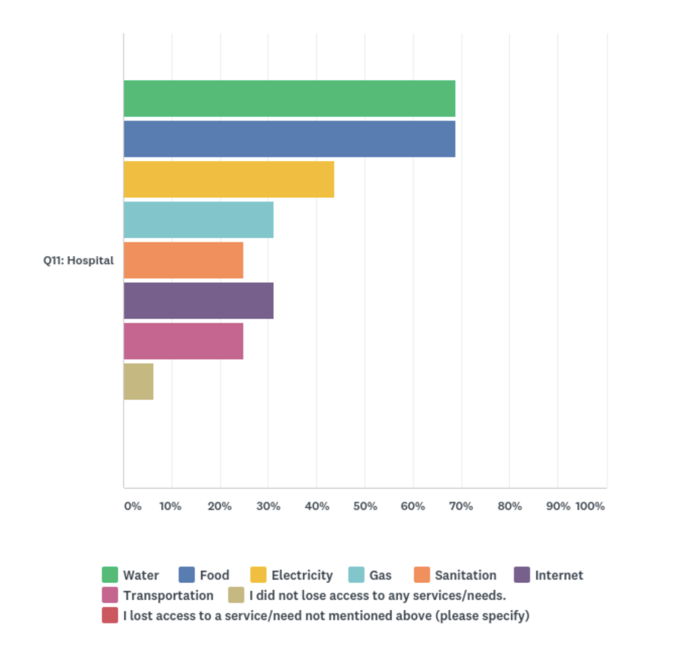
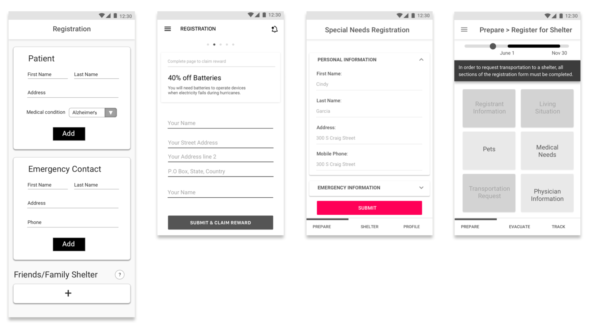

TeleTracking - Helping victims of disasters
Throughout man-made or natural disasters, hospitals face a surge of patients and non-patients alike, looking for medical care, shelter and protection. Seeking help at hospitals that are already overstrechted may cost the lives of injured victims. Citizens must therefore be directed to shelter locations capable of accommodating them.
Haven is an app that helps citizens to better prepare themselves to survive hurricanes and to relocate to shelters other than hospitals.
PROJECT BREAKDOWN
Scope
8 months
5 person team
Master's Capstone Project
My roles
UX Researcher
UX Designer
Tech Lead
Skills
Affinity Diagrams
Interviewing
Design Sprints
User Testing
Conducting co-design activities
Tools
Paper + Pencil
Sketch
HTML/CSS + JavaScript
Haven
Haven is an app designed to help special medical needs citizens and their caregivers to find the most appropriate shelter from an upcoming hurricane. Users will be able to:
- Register special medical needs citizens into a special medical needs shelter.
- Access a personalized preparation list.
- Access personalized evacuation plans that will be updated based on external conditions.
Understanding the Problem Space
Project Kickoff
We met with TeleTracking to better understand the problem space. We asked them what their main goals for the project were, explained our design process and conducted a joint design activity with them: they were asked to create a TeleTracking persona, somebody that would impersonate the company's main values and goals.

Initial Research Methods
In the first three months, the team focused on understanding the problem space, using different techniques:
GUERILLA RESEARCH
To better understand how the general population deals with disasters.
SECONDARY RESEARCH
To get a broader view of different kinds of disasters and how people are affected by them.
INTERVIEWS
To get specific points of view from hospitals, disaster experts and disaster survivors.
SURVEY
To identify general problems faced by disaster survivors.

Guerilla Research
By initially concentrating on ordinary citizens who had already been through a disaster, some of our key findings were:
When facing a disaster people might panic and not follow the procedures, even if they know them.

Supermarkets may be used as shelters since they could provide heat and electricity.

Disaster preparedness and knowledge often comes from school, movies and the news.
Surveys
We submitted a survey to MTurk to obtain additional information on areas we still had a gap on secondary research data. The survey was answered by 98 people that had experienced disasters.
We found out that hospitals are still a fairly popular shelter location.
We wanted to understand the main reasons why people seek shelter at hospitals:
Interviews
We decided it was important to acquire additional detailed information on some particular areas. In order to obtain it, we conducted interviews with:
Some insights were:
- Hospitals must have the capability of tracking down non patients within their facilities.
- If special need shelters are full, people tend to be sent to hospitals. Hospitals would then look after them, but they would not be considered as patients.
- Frequently, citizens don't take disasters seriously enough. Eventually, when they do realize they need shelter, hospitals might be the closest safe locations available.
Affinity Diagramming
In order to better understand all the information obtained from interviews, we set up an affinity diagram to cluster information.
Generating Initial Ideas
After research, we generated and tested ideas by using the following methods:
STAKEHOLDER MODEL
DESIGN SPRINTS
STORYBOARDS & SPEEDDATING
REVERSE ASSUMPTIONS
Stakeholder model
In order to generate more ideas in a faster and more creative way, we first used our stakeholder model to identify pain points between the entities and the values exchanged by them.
Design Sprints
By generating ideas through design sprints, we were able to be creative and think out of the box. The methods used were:
FUTURE PITCHES
Pitching viable ideas based on previous research.
HOW MIGHT WE
Thinking about how we might solve previously identified problems.
CRAZY 8’s
Generating 8 different ideas in 8 minutes.
VISIONING
Collaborative sketching to generate solutions based on How Might We prompts.
Storyboarding & Speeddating
From all ideas formulated in the design sprint we selected the most promising ones and created 6 storyboards, each portraying a different solution. Selected ideas focused on citizen redirection (2x), hospital expansion, forcing citizen action, tracking non-patients, having non-patients at hospitals as volunteers.
In order to evaluate our ideas we had an onsite client meeting, where we showed them the storyboards and evaluated their reactions. We wanted to understand whether or not users would feel the need for using and adopting our proposed solutions.
The client reacted well to the ideas, but indicated that:
- The solution should be more citizen focused.
- There was no restriction on the kind of technology the final solution uses.
- The solution could be a service but it should have a product (such as an app) as a part of it.
Reverse assumptions and 20 questions
Taking into account client feedback, the team conducted another design sprint, using a methodology that would help us reframe the problem and look at it from a new perspective.

Design Idea
Paper prototype
The team discussed the ideas generated after the Reverse Assumption activity and created a low-fidelity prototype of our main idea: an app for citizens to obtain real-time information from shelters. We then created and tested screens with users by conducting think alouds.
Parallel Prototyping
Each team member separately created low-fidelity screens for the whole app flow. These screens were then compared and combined into a final medium-fidelity version.

User Testing
The team travelled to Florida to test our solution with caregivers, special medical needs citizens and general citizens who had been through hurricanes. We followed a protocol and had user's thinking-aloud to understand their mental models while using the app.

Co-design activity at hospital
To better understand how hospitals would better benefit from the app collected data, we conducted a co-design activity with data analysts at a hospital in Naples. Participants were given 50 words related to the problem domain and had to organize a data dashboard of their interest.

Screen Iterations
Along many rounds of in-person and remote user testings, the idea and screens evolved.
Final Product
User experience
For demonstration purposes I coded the main interactions of the app in HTML and JavaScript, representing the user flow of a caregiver. The recorded video of the app interaction can be seen below.
Haven User-Flow
This screen flow demonstrate the user experience of navigating through the app.

Road Map
Some potential features are expressed on the roadmap, such as expanding the service to paid caregivers, who would interact with the app differently than family caregivers for example.
 Marina Leao Lucena 2020
Marina Leao Lucena 2020